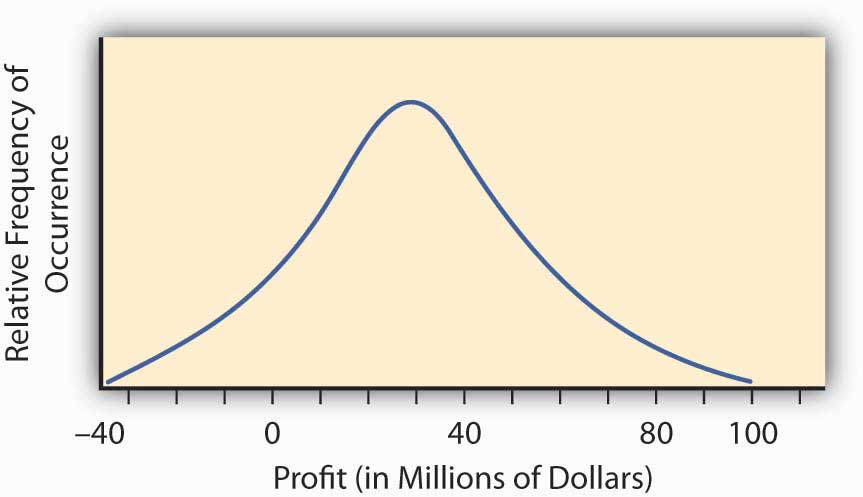

In Chapter 1 "The Nature of Risk: Losses and Opportunities", we discussed how risk arises as a consequence of uncertainty. Recall also that risk is not the state of uncertainty itself. Risk and uncertainty are connected and yet are distinct concepts.
In this chapter, we will discuss the ways in which we measure risk and uncertainty. If we wish to understand and use the concepts of risk and uncertainty, we need to be able to measure these concepts’ outcomes. Psychological and economic research shows that emotions such as fear, dread, ambiguity avoidance, and feelings of emotional loss represent valid risks. Such feelings are thus relevant to decision making under uncertainty. Our focus here, however, will draw more on financial metrics rather than emotional or psychological measures of risk perception. In this chapter, we thus discuss measurable and quantifiable outcomes and how we can measure risk and uncertainty using numerical methods.
A “metric” in this context is a system of related measures that helps us quantify characteristics or qualities. Any individual or enterprise needs to be able to quantify risk before they can decide whether or not a particular risk is critical enough to commit resources to manage. If such resources have been committed, then we need measurements to see whether the risk management process or procedure has reduced risk. And all forms of enterprises, for financial profit or for social profit, must strive to reduce risk. Without risk metrics, enterprises cannot tell whether or not they have reached risk management objectives. Enterprises including businesses hold risk management to be as important as any other objective, including profitability. Without risk metrics to measure success, failure, or incremental improvement, we cannot judge progress in the control of risk.
Risk management provides a framework for assessing opportunities for profit, as well as for gauging threats of loss. Without measuring risk, we cannot ascertain what action of the available alternatives the enterprise should take to optimize the risk-reward tradeoff. The risk-reward tradeoff is essentially a cost-benefit analysis taking uncertainty into account. In (economic) marginal analysis terms, we want to know how many additional units of risk we need to take on in order to get an additional unit of reward or profit. A firm, for example, wants to know how much capital it needs to keep from going insolvent if a bad risk is realized.This is particularly true in firms like insurance companies and banks where the business opportunity they pursue is mainly based on taking calculated and judgment-based risks. Indeed, if they cannot measure risk, enterprises are stuck in the ancient world of being helpless to act in the face of uncertainty. Risk metrics allow us to measure risk, giving us an ability to control risk and simultaneously exploit opportunities as they arise. No one profits from establishing the existence of an uncertain state of nature. Instead, managers must measure and assess their enterprise’s degree of vulnerability (risk) and sensitivity to the various potential states of nature. After reading this chapter, you should be able to define several different risk metrics and be able to discuss when each metric is appropriate for a given situation.
We will discuss several risk measures here, each of which comes about from the progression of mathematical approaches to describing and evaluating risk. We emphasize from the start, however, that measuring risk using these risk metrics is only one step as we assess any opportunity-risk issue. Risk metrics cannot stand alone. We must also evaluate how appropriate each underlying model might be for the occasion. Further, we need to evaluate each question in terms of the risk level that each entity is willing to assume for the gain each hopes to receive. Firms must understand the assumptions behind worst-case or ruin scenarios, since most firms do not want to take on risks that “bet the house.” To this end, knowing the severity of losses that might be expected in the future (severity is the dollar value per claim) using forecasting models represents one aspect of quantifying risk. However, financial decision making requires that we evaluate severity levels based upon what an individual or a firm can comfortably endure (risk appetite). Further, we must evaluate the frequency with which a particular outcome will occur. As with the common English language usage of the term, frequency is the number of times the event is expected to occur in a specified period of time. The 2008 financial crisis provides an example: Poor risk management of the financial models used for creating mortgage-backed securities and credit default derivatives contributed to a worldwide crisis. The assessment of loss frequency, particularly managers’ assessment of the severity of losses, was grossly underestimated. We discuss risk assessment using risk metrics in the pages that follow.
As we noted in Chapter 1 "The Nature of Risk: Losses and Opportunities", risk is a concept encompassing perils, hazards, exposures, and perception (with a strong emphasis on perception). It should come as no surprise that the metrics for measuring risk are also quite varied. The aspect of risk being considered in a particular situation dictates the risk measure used. If we are interested in default risk (the risk that a contracting party will be unable to live up to the terms of some financial contract, usually due to total ruin or bankruptcy), then one risk measure might be employed. If, on the other hand, we are interested in expected fluctuations of retained earnings for paying future losses, then we would likely use another risk measure. If we wish to know how much risk is generated by a risky undertaking that cannot be diversified away in the marketplace, then we would use yet another risk measure. Each risk measure has its place and appropriate application. One part of the art of risk management is to pick the appropriate risk measure for each situation.
In this chapter, we will cover the following:
The first step in developing any framework for the measuring risk quantitatively involves creating a framework for addressing and studying uncertainty itself. Such a framework lies within the realm of probability. Since risk arises from uncertainty, measures of risk must also take uncertainty into account. The process of quantifying uncertainty, also known as probability theory, actually proved to be surprisingly difficult and took millennia to develop. Progress on this front required that we develop two fundamental ideas. The first is a way to quantify uncertainty (probability) of potential states of the world. Second, we had to develop the notion that the outcomes of interest to human events, the risks, were subject to some kind of regularity that we could predict and that would remain stable over time. Developing and accepting these two notions represented path-breaking, seminal changes from previous mindsets. Until research teams made and accepted these steps, any firm, scientific foundation for developing probability and risk was impossible.
Solving risk problems requires that we compile a puzzle of the many personal and business risks. First, we need to obtain quantitative measures of each risk. Again, as in Chapter 1 "The Nature of Risk: Losses and Opportunities", we repeat the Link puzzle in Figure 2.1 "Links between Each Holistic Risk Puzzle Piece and Its Computational Measures". The point illustrated in Figure 2.1 "Links between Each Holistic Risk Puzzle Piece and Its Computational Measures" is that we face many varied risk exposures, appropriate risk measures, and statistical techniques that we apply for different risks. However, most risks are interconnected. When taken together, they provide a holistic risk measure for the firm or a family. For some risks, measures are not sophisticated and easy to achieve, such as the risk of potential fires in a region. Sometimes trying to predict potential risks is much more complex, such as predicting one-hundred-year floods in various regions. For each type of peril and hazard, we may well have different techniques to measure the risks. Our need to realize that catastrophes can happen and our need to account for them are of paramount importance. The 2008–2009 financial crisis may well have occurred in part because the risk measures in use failed to account for the systemic collapses of the financial institutions. Mostly, institutions toppled because of a result of the mortgage-backed securities and the real estate markets. As we explore risk computations and measures throughout this chapter, you will learn terminology and understand how we use such measures. You will thus embark on a journey into the world of risk management. Some measures may seem simplistic. Other measures will show you how to use complex models that use the most sophisticated state-of-the-art mathematical and statistical technology. You’ll notice also that many computations would be impossible without the advent of powerful computers and computation memory. Now, on to the journey.
Figure 2.1 Links between Each Holistic Risk Puzzle Piece and Its Computational Measures

As we consider uncertainty, we use rigorous quantitative studies of chance, the recognition of its empirical regularity in uncertain situations. Many of these methods are used to quantify the occurrence of uncertain events that represent intellectual milestones. As we create models based upon probability and statistics, you will likely recognize that probability and statistics touch nearly every field of study today. As we have internalized the predictive regularity of repeated chance events, our entire worldview has changed. For example, we have convinced ourselves of the odds of getting heads in a coin flip so much that it’s hard to imagine otherwise. We’re used to seeing statements such as “average life of 1,000 hours” on a package of light bulbs. We understand such a phrase because we can think of the length of life of a light bulb as being uncertain but statistically predictable. We routinely hear such statements as “The chance of rain tomorrow is 20 percent.” It’s hard for us to imagine that only a few centuries ago people did not believe even in the existence of chance occurrences or random events or in accidents, much less explore any method of quantifying seemingly chance events. Up until very recently, people have believed that God controlled every minute detail of the universe. This belief rules out any kind of conceptualization of chance as a regular or predictable phenomenon. For example, until recently the cost of buying a life annuity that paid buyers $100 per month for life was the same for a thirty-year-old as it was for a seventy-year-old. It didn’t matter that empirically, the “life expectancy” of a thirty-year-old was four times longer than that of a seventy-year-old.The government of William III of England, for example, offered annuities of 14 percent regardless of whether the annuitant was 30 or 70 percent; (Karl Pearson, The History of Statistics In the 17th and 18th Centuries against the Changing Background of Intellectual, Scientific and Religious Thought (London: Charles Griffin & Co., 1978), 134. After all, people believed that a person’s particular time of death was “God’s will.” No one believed that the length of someone’s life could be judged or predicted statistically by any noticed or exhibited regularity across people. In spite of the advancements in mathematics and science since the beginning of civilization, remarkably, the development of measures of relative frequency of occurrence of uncertain events did not occur until the 1600s. This birth of the “modern” ideas of chance occurred when a problem was posed to mathematician Blaisé Pascal by a frequent gambler. As often occurs, the problem turned out to be less important in the long run than the solution developed to solve the problem.
The problem posed was: If two people are gambling and the game is interrupted and discontinued before either one of the two has won, what is a fair way to split the pot of money on the table? Clearly the person ahead at that time had a better chance of winning the game and should have gotten more. The player in the lead would receive the larger portion of the pot of money. However, the person losing could come from behind and win. It could happen and such a possibility should not be excluded. How should the pot be split fairly? Pascal formulated an approach to this problem and, in a series of letters with Pierre de Fermat, developed an approach to the problem that entailed writing down all possible outcomes that could possibly occur and then counting the number of times the first gambler won. The proportion of times that the first gambler won (calculated as the number of times the gambler won divided by the total number of possible outcomes) was taken to be the proportion of the pot that the first gambler could fairly claim. In the process of formulating this solution, Pascal and Fermat more generally developed a framework to quantify the relative frequency of uncertain outcomes, which is now known as probability. They created the mathematical notion of expected value of an uncertain event. They were the first to model the exhibited regularity of chance or uncertain events and apply it to solve a practical problem. In fact, their solution pointed to many other potential applications to problems in law, economics, and other fields.
From Pascal and Fermat’s work, it became clear that to manage future risks under uncertainty, we need to have some idea about not only the possible outcomes or states of the world but also how likely each outcome is to occur. We need a modelA symbolic representation of the possible outcomes., or in other words, a symbolic representation of the possible outcomes and their likelihoods or relative frequencies.
Historically, the development of measures of chance (probability) only began in the mid-1600s. Why in the middle ages, and not with the Greeks? The answer, in part, is that the Greeks and their predecessors did not have the mathematical concepts. Nor, more importantly, did the Greeks have the psychological perspective to even contemplate these notions, much less develop them into a cogent theory capable of reproduction and expansion. First, the Greeks did not have the mathematical notational system necessary to contemplate a formal approach to risk. They lacked, for example, the simple and complete symbolic system including a zero and an equal sign useful for computation, a contribution that was subsequently developed by the Arabs and later adopted by the Western world. The use of Roman numerals might have been sufficient for counting, and perhaps sufficient for geometry, but certainly it was not conducive to complex calculations. The equal sign was not in common use until the late middle ages. Imagine doing calculations (even such simple computations as dividing fractions or solving an equation) in Roman numerals without an equal sign, a zero element, or a decimal point!
But mathematicians and scientists settled these impediments a thousand years before the advent of probability. Why did risk analysis not emerge with the advent of a more complete numbering system just as sophisticated calculations in astronomy, engineering, and physics did? The answer is more psychological than mathematical and goes to the heart of why we consider risk as both a psychological and a numerical concept in this book. To the Greeks (and to the millennia of others who followed them), the heavens, divinely created, were believed to be static and perfect and governed by regularity and rules of perfection—circles, spheres, the six perfect geometric solids, and so forth. The earthly sphere, on the other hand, was the source of imperfection and chaos. The Greeks accepted that they would find no sense in studying the chaotic events of Earth. The ancient Greeks found the path to truth in contemplating the perfection of the heavens and other perfect unspoiled or uncorrupted entities. Why would a god (or gods) powerful enough to know and create everything intentionally create a world using a less than perfect model? The Greeks, and others who followed, believed pure reasoning, not empirical, observation would lead to knowledge. Studying regularity in the chaotic earthly sphere was worst than a futile waste of time; it distracted attention from important contemplations actually likely to impart true knowledge.
It took a radical change in mindset to start to contemplate regularity in events in the earthly domain. We are all creatures of our age, and we could not pose the necessary questions to develop a theory of probability and risk until we shook off these shackles of the mind. Until the age of reason, when church reforms and a growing merchant class (who pragmatically examined and counted things empirically) created a tremendous growth in trade, we remained trapped in the old ways of thinking. As long as society was static and stationary, with villages this year being essentially the same as they were last year or a decade or century before, there was little need to pose or solve these problems. M. G. Kendall captures this succinctly when he noted that “mathematics never leads thought, but only expresses it.”* The western world was simply not yet ready to try to quantify risk or event likelihood (probability) or to contemplate uncertainty. If all things are believed to be governed by an omnipotent god, then regularity is not to be trusted, perhaps it can even be considered deceptive, and variation is irrelevant and illusive, being merely reflective of God’s will. Moreover, the fact that things like dice and drawing of lots were simultaneously used by magicians, by gamblers, and by religious figures for divination did not provide any impetus toward looking for regularity in earthly endeavors.
* M. G. Kendall, “The Beginnings of a Probability Calculus,” in Studies in the History of Statistics and Probability, vol. 1, ed. E. S. Pearson and Sir Maurice Kendall (London: Charles Griffin & Co., 1970), 30.
When we can see the pattern of the losses and/or gains experienced in the past, we hope that the same pattern will continue in the future. In some cases, we want to be able to modify the past results in a logical way like inflating them for the time value of money discussed in Chapter 4 "Evolving Risk Management: Fundamental Tools". If the patterns of gains and losses continue, our predictions of future losses or gains will be informative. Similarly, we may develop a pattern of losses based on theoretical or physical constructs (such as hurricane forecasting models based on physics or likelihood of obtaining a head in a flip of a coin based on theoretical models of equal likelihoodThe probability that an event will occur in a specified amount of time. of a head and a tail). Likelihood is the notion of how often a certain event will occur. Inaccuracies in our abilities to create a correct distributionThe display of the events on a map that tells us the likelihood that the event or events will occur. arise from our inability to predict futures outcomes accurately. The distribution is the display of the events on a map that tells us the likelihood that the event or events will occur. In some ways, it resembles a picture of the likelihood and regularity of events that occur. Let’s now turn to creating models and measures of the outcomes and their frequency.
Table 2.1 "Claims and Fire Losses for Group of Homes in Location A" and Table 2.2 "Claims and Fire Losses ($) for Homes in Location B" show the compilation of the number of claims and their dollar amounts for homes that were burnt during a five-year period in two different locations labeled Location A and Location B. We have information about the total number of claims per year and the amount of the fire losses in dollars for each year. Each location has the same number of homes (1,000 homes). Each location has a total of 51 claims for the five-year period, an average (or mean) of 10.2 claims per year, which is the frequency. The average dollar amount of losses per claim for the whole period is also the same for each location, $6,166.67, which is the definition of severity.
Table 2.1 Claims and Fire Losses for Group of Homes in Location A
| Year | Number of Fire Claims | Number of Fire Losses ($) | Average Loss per Claim ($) |
|---|---|---|---|
| 1 | 11 | 16,500.00 | 1,500.00 |
| 2 | 9 | 40,000.00 | 4,444.44 |
| 3 | 7 | 30,000.00 | 4,285.71 |
| 4 | 10 | 123,000.00 | 12,300.00 |
| 5 | 14 | 105,000.00 | 7,500.00 |
| Total | 51.00 | 314,500.00 | 6,166.67 |
| Mean | 10.20 | 62,900.00 | 6,166.67 |
| Average Frequency = | 10.20 | ||
| Average Severity = | 6,166.67 for the 5-year period |
Table 2.2 Claims and Fire Losses ($) for Homes in Location B
| Year | Number of Fire Claims | Fire Losses | Average Loss per Claim ($) |
|---|---|---|---|
| 1 | 15 | 16,500.00 | 1,100.00 |
| 2 | 5 | 40,000.00 | 8,000.00 |
| 3 | 12 | 30,000.00 | 2,500.00 |
| 4 | 10 | 123,000.00 | 12,300.00 |
| 5 | 9 | 105,000.00 | 11,666.67 |
| Total | 51.00 | 314,500.00 | 6,166.67 |
| Mean | 10.20 | 62,900.00 | 6,166.67 |
| Average frequency = | 10.20 | ||
| Average severity = | 6,166.67 for the 5-year period |
As shown in Table 2.1 "Claims and Fire Losses for Group of Homes in Location A" and Table 2.2 "Claims and Fire Losses ($) for Homes in Location B", the total number of fire claims for the two locations A and B is the same, as is the total dollar amount of losses shown. You might recall from earlier, the number of claims per year is called the frequency. The average frequency of claims for locations A and B is 10.2 per year. The size of the loss in terms of dollars lost per claim is called severity, as we noted previously. The average dollars lost per claim per year in each location is $6,166.67.
The most important measures for risk managers when they address potential losses that arise from uncertainty are usually those associated with frequency and severity of losses during a specified period of time. The use of frequency and severity data is very important to both insurers and firm managers concerned with judging the risk of various endeavors. Risk managers try to employ activities (physical construction, backup systems, financial hedging, insurance, etc.) to decrease the frequency or severity (or both) of potential losses. In Chapter 4 "Evolving Risk Management: Fundamental Tools", we will see frequency data and severity data represented. Typically, the risk manager will relate the number of incidents under investigation to a base, such as the number of employees if examining the frequency and severity of workplace injuries. In the examples in Table 2.1 "Claims and Fire Losses for Group of Homes in Location A" and Table 2.2 "Claims and Fire Losses ($) for Homes in Location B", the severity is related to the number of fire claims in the five-year period per 1,000 homes. It is important to note that in these tables the precise distribution (frequencies and dollar losses) over the years for the claims per year arising in Location A is different from distribution for Location B. This will be discussed later in this chapter. Next, we discuss the concept of frequency in terms of probability or likelihood.
Returning back to the quantification of the notion of uncertainty, we first observe that our intuitive usage of the word probability can have two different meanings or forms as related to statements of uncertain outcomes. This is exemplified by two different statements:See Patrick Brockett and Arnold Levine Brockett, Statistics, Probability and Their Applications (W. B. Saunders Publishing Co., 1984), 62.
“If I sail west from Europe, I have a 50 percent chance that I will fall off the edge of the earth.”
Conceptually, these represent two distinct types of probability statements. The first is a statement about probability as a degree of belief about whether an event will occur and how firmly this belief is held. The second is a statement about how often a head would be expected to show up in repeated flips of a coin. The important difference is that the first statement’s validity or truth will be stated. We can clear up the statement’s veracity for all by sailing across the globe.
The second statement, however, still remains unsettled. Even after the first coin flip, we still have a 50 percent chance that the next flip will result in a head. The second provides a different interpretation of “probability,” namely, as a relative frequency of occurrence in repeated trials. This relative frequency conceptualization of probability is most relevant for risk management. One wants to learn from past events about the likelihood of future occurrences. The discoverers of probability theory adopted the relative frequency approach to formalizing the likelihood of chance events.
Pascal and Fermat ushered in a major conceptual breakthrough: the concept that, in repeated games of chance (or in many other situations encountered in nature) involving uncertainty, fixed relative frequencies of occurrence of the individual possible outcomes arose. These relative frequencies were both stable over time and individuals could calculate them by simply counting the number of ways that the outcome could occur divided by the total number of equally likely possible outcomes. In addition, empirically the relative frequency of occurrence of events in a long sequence of repeated trials (e.g., repeated gambling games) corresponded with the theoretical calculation of the number of ways an event could occur divided by the total number of possible outcomes. This is the model of equally likely outcomes or relative frequency definition of probability. It was a very distinct departure from the previous conceptualization of uncertainty that had all events controlled by God with no humanly discernable pattern. In the Pascal-Fermat framework, prediction became a matter of counting that could be done by anyone. Probability and prediction had become a tool of the people! Figure 2.2 "Possible Outcomes for a Roll of Two Dice with the Probability of Having a Particular Number of Dots Facing Up" provides an example representing all possible outcomes in the throw of two colored dice along with their associated probabilities.
Figure 2.2 Possible Outcomes for a Roll of Two Dice with the Probability of Having a Particular Number of Dots Facing Up

Figure 2.2 "Possible Outcomes for a Roll of Two Dice with the Probability of Having a Particular Number of Dots Facing Up" lists the probabilities for the number of dots facing upward (2, 3, 4, etc.) in a roll of two colored dice. We can calculate the probability for any one of these numbers (2, 3, 4, etc.) by adding up the number of outcomes (rolls of two dice) that result in this number of dots facing up divided by the total number of possibilities. For example, a roll of thirty-six possibilities total when we roll two dice (count them). The probability of rolling a 2 is 1/36 (we can only roll a 2 one way, namely, when both dice have a 1 facing up). The probability of rolling a 7 is 6/36 = 1/6 (since rolls can fall any of six ways to roll a 7—1 and 6 twice, 2 and 5 twice, 3 and 4 twice). For any other choice of number of dots facing upward, we can get the probability by just adding the number of ways the event can occur divided by thirty-six. The probability of rolling a 7 or an 11 (5 and 6 twice) on a throw of the dice, for instance, is (6 + 2)/36 = 2/9.
The notions of “equally likely outcomes” and the calculation of probabilities as the ratio of “the number of ways in which an event could occur, divided by the total number of equally likely outcomes” is seminal and instructive. But, it did not include situations in which the number of possible outcomes was (at least conceptually) unbounded or infinite or not equally likely.Nor was the logic of the notion of equally likely outcomes readily understood at the time. For example, the famous mathematician D’Alembert made the following mistake when calculating the probability of a head appearing in two flips of a coin (Karl Pearson, The History of Statistics in the 17th and 18th Centuries against the Changing Background of Intellectual, Scientific and Religious Thought [London: Charles Griffin & Co., 1978], 552). D’Alembert said the head could come up on the first flip, which would settle that matter, or a tail could come up on the first flip followed by either a head or a tail on the second flip. There are three outcomes, two of which have a head, and so he claimed the likelihood of getting a head in two flips is 2/3. Evidently, he did not take the time to actually flip coins to see that the probability was 3/4, since the possible equally likely outcomes are actually (H,T), (H,H), (T,H), (T,T) with three pairs of flips resulting in a head. The error is that the outcomes stated in D’Alembert’s solution are not equally likely using his outcomes H, (T,H), (T,T), so his denominator is wrong. The moral of this story is that postulated theoretical models should always be tested against empirical data whenever possible to uncover any possible errors. We needed an extension. Noticing that the probability of an event, any event, provided that extension. Further, extending the theory to nonequally likely possible outcomes arose by noticing that the probability of an event—any event—occurring could be calculated as the relative frequency of an event occurring in a long run of trials in which the event may or may not occur. Thus, different events could have different, nonequal chances of occurring in a long repetition of scenarios involving the possible occurrences of the events. Table 2.3 "Opportunity and Loss Assessment Consequences of New Product Market Entry" provides an example of this. We can extend the theory yet further to a situation in which the number of possible outcomes is potentially infinite. But what about a situation in which no easily definable bound on the number of possible outcomes can be found? We can address this situation by again using the relative frequency interpretation of probability as well. When we have a continuum of possible outcomes (e.g., if an outcome is time, we can view it as a continuous variable outcome), then a curve of relative frequency is created. Thus, the probability of an outcome falling between two numbers x and y is the area under the frequency curve between x and y. The total area under the curve is one reflecting that it’s 100 percent certain that some outcome will occur.
The so-called normal distribution or bell-shaped curve from statistics provides us with an example of such a continuous probability distribution curve. The bell-shaped curve represents a situation wherein a continuum of possible outcomes arises. Figure 2.3 "Normal Distribution of Potential Profit from a Research and Development Project" provides such a bell-shaped curve for the profitability of implementing a new research and development project. It may have profit or loss.
Figure 2.3 Normal Distribution of Potential Profit from a Research and Development Project
To find the probability of any range of profitability values for this research and development project, we find the area under the curve in Figure 2.3 "Normal Distribution of Potential Profit from a Research and Development Project" between the desired range of profitability values. For example, the distribution in Figure 2.3 "Normal Distribution of Potential Profit from a Research and Development Project" was constructed to have what is called a normal distribution with the hump over the point $30 million and a measure of spread of $23 million. This spread represents the standard deviation that we will discuss in the next section. We can calculate the area under the curve above $0, which will be the probability that we will make a profit by implementing the research and development project. We do this by reference to a normal distribution table of values available in any statistics book. The area under the curve is 0.904, meaning that we have approximately a 90 percent change (probability of 0.9) that the project will result in a profit.
In practice, we build probability distribution tables or probability curves such as those in Figure 2.2 "Possible Outcomes for a Roll of Two Dice with the Probability of Having a Particular Number of Dots Facing Up", Figure 2.3 "Normal Distribution of Potential Profit from a Research and Development Project", and Table 2.3 "Opportunity and Loss Assessment Consequences of New Product Market Entry" using estimates of the likelihood (probability) of various different states of nature based on either historical relative frequency of occurrence or theoretical data. For example, empirical data may come from repeated observations in similar situations such as with historically constructed life or mortality tables. Theoretical data may come from a physics or engineering assessment of failure likelihood for a bridge or nuclear power plant containment vessel. In some situations, however, we can determine the likelihoods subjectively or by expert opinion. For example, assessments of political overthrows of governments are used for pricing political risk insurance needed by corporations doing business in emerging markets. Regardless of the source of the likelihoods, we can obtain an assessment of the probabilities or relative frequencies of the future occurrence of each conceivable event. The resulting collection of possible events together with their respective probabilities of occurrence is called a probability distribution, an example of which is shown in Table 2.3 "Opportunity and Loss Assessment Consequences of New Product Market Entry".
We have developed a quantified measure of the likelihood of the various uncertain outcomes that a firm or individual might face—these are also called probabilities. We can now turn to address the consequences of the uncertainty. The consequences of uncertainty are most often a vital issue financially. The reason that uncertainty is unsettling is not the uncertainty itself but rather the various different outcomes that can impact strategic plans, profitability, quality of life, and other important aspects of our life or the viability of a company. Therefore, we need to assess how we are impacted in each state of the world. For each outcome, we associate a value reflecting how we are affected by being in this state of the world.
As an example, consider a retail firm entering a new market with a newly created product. They may make a lot of money by taking advantage of “first-mover” status. They may lose money if the product is not accepted sufficiently by the marketplace. In addition, although they have tried to anticipate any problems, they may be faced with potential product liability. While they naturally try to make their products as safe as possible, they have to regard the potential liability because of the limited experience with the product. They may be able to assess the likelihood of a lawsuit as well as the consequences (losses) that might result from having to defend such lawsuits. The uncertainty of the consequences makes this endeavor risky and the potential for gain that motivates the company’s entry into the new market. How does one calculate these gains and losses? We already demonstrated some calculations in the examples above in Table 2.1 "Claims and Fire Losses for Group of Homes in Location A" and Table 2.2 "Claims and Fire Losses ($) for Homes in Location B" for the claims and fire losses for homes in locations A and B. These examples concentrated on the consequences of the uncertainty about fires. Another way to compute the same type of consequences is provided in the example in Table 2.3 "Opportunity and Loss Assessment Consequences of New Product Market Entry" for the probability distribution for this new market entry. We look for an assessment of the financial consequences of the entry into the market as well. This example looks at a few possible outcomes, not only the fire losses outcome. These outcomes can have positive or negative consequences. Therefore, we use the opportunity terminology here rather than only the loss possibilities.
Table 2.3 Opportunity and Loss Assessment Consequences of New Product Market Entry
| State of Nature | Probability Assessment of Likelihood of State | Financial Consequences of Being in This State (in Millions of Dollars) |
|---|---|---|
| Subject to a loss in a product liability lawsuit | .01 | −10.2 |
| Market acceptance is limited and temporary | .10 | −.50 |
| Some market acceptance but no great consumer demand | .40 | .10 |
| Good market acceptance and sales performance | .40 | 1 |
| Great market demand and sales performance | .09 | 8 |
As you can see, it’s not the uncertainty of the states themselves that causes decision makers to ponder the advisability of market entry of a new product. It’s the consequences of the different outcomes that cause deliberation. The firm could lose $10.2 million or gain $8 million. If we knew which state would materialize, the decision would be simple. We address the issue of how we combine the probability assessment with the value of the gain or loss for the purpose of assessing the risk (consequences of uncertainty) in the next section.
Early probability developers asked how we could combine the various probabilities and outcome values together to obtain a single number reflecting the “value” of the multitude of different outcomes and different consequences of these outcomes. They wanted a single number that summarized in some way the entire probability distribution. In the context of the gambling games of the time when the outcomes were the amount you won in each potential uncertain state of the world, they asserted that this value was the “fair valueThe numerical average of the experience of all possible outcomes if you played a game over and over.” of the gamble. We define fair value as the numerical average of the experience of all possible outcomes if you played the game over and over. This is also called the “expected value.” Expected value is calculated by multiplying each probability (or relative frequency) by its respective gain or loss.In some ways it is a shame that the term “expected value” has been used to describe this concept. A better term is “long run average value” or “mean value” since this particular value is really not to be expected in any real sense and may not even be a possibility to occur (e.g., the value calculated from Table 2.3 "Opportunity and Loss Assessment Consequences of New Product Market Entry" is 1.008, which is not even a possibility). Nevertheless, we are stuck with this terminology, and it does convey some conception of what we mean as long as we interpreted it as being the number expected as an average value in a long series of repetitions of the scenario being evaluated. It is also referred to as the mean value, or the average value. If X denotes the value that results in an uncertain situation, then the expected value (or average value or mean value) is often denoted by E(X), sometimes also referred to by economists as E(U)—expected utility—and E(G)—expected gain. In the long run, the total experienced loss or gain divided by the number of repeated trials would be the sum of the probabilities times the experience in each state. In Table 2.3 "Opportunity and Loss Assessment Consequences of New Product Market Entry" the expected value is (.01)×(–10.2) + (.1) × ( −.50) + (.4) × (.1) + (.4) × (1) + (.09) × (8) = 1.008. Thus, we would say the expected outcome of the uncertain situation described in Table 2.3 "Opportunity and Loss Assessment Consequences of New Product Market Entry" was $1.008 million, or $1,008,000.00. Similarly, the expected value of the number of points on the toss of a pair of dice calculated from example in Figure 2.2 "Possible Outcomes for a Roll of Two Dice with the Probability of Having a Particular Number of Dots Facing Up" is 2 × (1/36) + 3 × (2/36) + 4 × (3/36) + 5 × (4/36) + 6 × (5/36) + 7 × (6/36) + 8 × (5/36) + 9 × (4/36) + 10 × (3/36) + 11 × (2/36) + 12 × (1/36) = 7. In uncertain economic situations involving possible financial gains or losses, the mean value or average value or expected value is often used to express the expected returns.Other commonly used measures of profitability in an uncertain opportunity, other than the mean or expected value, are the mode (the most likely value) and the median (the number with half the numbers above it and half the numbers below it—the 50 percent mark). It represents the expected return from an endeavor; however, it does not express the risk involved in the uncertain scenario. We turn to this now.
Relating back to Table 2.1 "Claims and Fire Losses for Group of Homes in Location A" and Table 2.2 "Claims and Fire Losses ($) for Homes in Location B", for locations A and B of fire claim losses, the expected value of losses is the severity of fire claims, $6,166.67, and the expected number of claims is the frequency of occurrence, 10.2 claims per year.
In this section you learned about the quantification of uncertain outcomes via probability models. More specifically, you delved into methods of computing:
A study of data losses incurred by companies due to hackers penetrating the Internet security of the firm found that 60 percent of the firms in the industry studied had experienced security breaches and that the average loss per security breach was $15,000.
The following is the experience of Insurer A for the last three years:
| Year | Number of Exposures | Number of Collision Claims | Collision Losses ($) |
|---|---|---|---|
| 1 | 10,000 | 375 | 350,000 |
| 2 | 10,000 | 330 | 250,000 |
| 3 | 10,000 | 420 | 400,000 |
The following is the experience of Insurer B for the last three years:
| Year | Number of Exposures | Number of Collision Claims | Collision Losses ($) |
|---|---|---|---|
| 1 | 20,000 | 975 | 650,000 |
| 2 | 20,000 | 730 | 850,000 |
| 3 | 20,000 | 820 | 900,000 |
Having developed the concept of probability to quantify the relative likelihood of an uncertain event, and having developed a measure of “expected value” for an uncertain event, we are now ready to try to quantify risk itself. The “expected value” (or mean value or fair value) quantifying the potential outcome arising from an uncertain scenario or situation in which probabilities have been assigned is a common input into the decision-making process concerning the advisability of taking certain actions, but it is not the only consideration. The financial return outcomes of various uncertain research and development, might, for example, be almost identical except that the return distributions are sort of shifted in one direction or the other. Such a situation is shown in Figure 2.4 "Possible Profitability from Three Potential Research and Development Projects". This figure describes the (continuous) distributions of anticipated profitability for each of three possible capital expenditures on uncertain research and development projects. These are labeled A, B, and C, respectively.
Figure 2.4 Possible Profitability from Three Potential Research and Development Projects

Intuitively, in economic terms a risk is a “surprise” outcome that is a consequence of uncertainty. It can be a positive surprise or a negative surprise, as we discussed in Chapter 1 "The Nature of Risk: Losses and Opportunities".
Using the terms explained in the last section, we can regard risk as the deviation from the expected value. The more an observation deviates from what we expected, the more surprised we are likely to become if we should see it, and hence the more risky (in an economic sense) we deem the outcome to be. Intuitively, the more surprise we “expect” from a venture or a scenario, the riskier we judge this venture or scenario to be.
Looking back on Figure 2.4 "Possible Profitability from Three Potential Research and Development Projects", we might say that all three curves actually represent the same level of risk in that they each differ from their expected value (the mean or hump of the distribution) in identical ways. They only differ in their respective expected level of profitability (the hump in the curve). Note that the uncertain scenarios “B” and “C” still describe risky situations, even though virtually all of the possible outcomes of these uncertain scenarios are in the positive profit range. The “risk” resides in the deviations from the expected value that might result (the surprise potential), whether on the average the result is negative or positive. Look at the distribution labeled “A,” which describes a scenario or opportunity/loss description where much more of the possible results are on the negative range (damages or losses). Economists don’t consider “A” to be any more risky (or more dangerous) than “B” or “C,” but simply less profitable. The deviation from any expected risk defines risk here. We can plan for negative as well as positive outcomes if we know what to expect. A certain negative value may be unfortunate, but it is not risky.
Some other uncertain situations or scenarios will have the same expected level of “profitability,” but will differ in the amount of “surprise” they might present. For example, let’s assume that we have three potential corporate project investment opportunities. We expect that, over a decade, the average profitability in each opportunity will amount to $30 million. The projects differ, however, by the level of uncertainty involved in this profitability assessment (see Figure 2.5 "Three Corporate Opportunities Having the Same Expected Profitability but Differing in Risk or Surprise Potential"). In Opportunity A, the possible range of profitability is $5–$60 million, whereas Opportunity B has a larger range of possible profits, between –$20 million and + $90 million. The third opportunity still has an expected return of $30 million, but now the range of values is from –$40 million to +$100. You could make more from Opportunity C, but you could lose more, as well. The deviation of the results around the expected value can measure the level of “surprise” potential the uncertain situation or profit/loss scenario contains. The uncertain situation concerning the profitability in Opportunity B contains a larger potential surprise in it than A, since we might get a larger deviation from the expected value in B than in A. That’s why we consider Opportunity B more risky than A. Opportunity C is the riskiest of all, having the possibility of a giant $100 million return, with the downside potential of creating a $40 million loss.
Figure 2.5 Three Corporate Opportunities Having the Same Expected Profitability but Differing in Risk or Surprise Potential

Our discussion above is based upon intuition rather than mathematics. To make it specific, we need to actually define quantitatively what we mean by the terms “a surprise” and “more surprised.” To this end, we must focus on the objective of the analysis. A sequence of throws of a pair of colored dice in which the red die always lands to the left of the green die may be surprising, but this surprise is irrelevant if the purpose of the dice throw is to play a game in which the number of dots facing up determines the pay off. We thus recognize that we must define risk in a context of the goal of the endeavor or study. If we are most concerned about the risk of insolvency, we may use one risk measure, while if we are interested in susceptibility of portfolio of assets to moderate interest rate changes, we may use another measure of risk. Context is everything. Let’s discuss several risk measures that are appropriate in different situations.
As we mentioned previously, intuitively, a risk measure should reflect the level of “surprise” potential intrinsic in the various outcomes of an uncertain situation or scenario. To this end, the literature proposes a variety of statistical measures for risk levels. All of these measures attempt to express the result variability for each relevant outcome in the uncertain situation. The following are some risk measures.
We can use the rangeThe distance between the highest possible outcome value to the lowest in a distribution. of the distribution—that is, the distance between the highest possible outcome value to the lowest—as a rough risk measure. The range provides an idea about the “worst-case” dispersion of successive surprises. By taking the “best-case scenario minus the worst-case scenario” we define the potential breadth of outcomes that could arise in the uncertain situation.
As an example, consider the number of claims per year in Location A of Table 2.1 "Claims and Fire Losses for Group of Homes in Location A". Table 2.1 "Claims and Fire Losses for Group of Homes in Location A" shows a low of seven claims per year to a high of fourteen claims per year, for a range of seven claims per year. For Location B of Table 2.2 "Claims and Fire Losses ($) for Homes in Location B", we have a range in the number of claims from a low of five in one year to a high of fifteen claims per year, which gives us a range of ten claims per year. Using the range measure of risk, we would say that Location A is less risky than Location B in this situation, especially since the average claim is the same (10.2) in each case and we have more variability or surprise potential in Location B. As another example, if we go back to the distribution of possible values in Table 2.3 "Opportunity and Loss Assessment Consequences of New Product Market Entry", the extremes vary from −$10.2 million to +$8 million, so the range is $18.2 million.
This risk measure leaves the picture incomplete because it cannot distinguish in riskiness between two distributions of situations where the possible outcomes are unbounded, nor does it take into account the frequency or probability of the extreme values. The lower value of –$10.2 million in Table 2.3 "Opportunity and Loss Assessment Consequences of New Product Market Entry" only occurs 1 percent of the time, so it’s highly unlikely that you would get a value this small. It could have had an extreme value of –$100 million, which occurred with probability 0.0000000001, in which case the range would have reflected this possibility. Note that it’s extremely unlikely that you would ever experience a one-in-a-trillion event. Usually you would not want your risk management activities or managerial actions to be dictated by a one-in-a-trillion event.
A more sophisticated (and more traditional) way to measure risk would consider not just the most extreme values of the distribution but all values and their respective occurrence probabilities. One way to do this is to average the deviations of the possible values of the distribution from a central value, such as the expected value E(V) or mean value discussed earlier. We develop this idea further below.
Continuing the example from Table 2.1 "Claims and Fire Losses for Group of Homes in Location A" and Table 2.2 "Claims and Fire Losses ($) for Homes in Location B", we now ask what differentiates the claims distribution of Location A and B, both of which possess the same expected frequency and severity. We have already seen that the range is different. We now examine how the two locations differ in terms of their deviation from the common mean or expected value. Essentially, we want to examine how they differ in terms of the amount of surprise we expect to see in observations form the distributions. One such measure of deviation or surprise is by calculating the expected squared distance of each of the various outcomes from their mean value. This is a weighted average squared distance of each possible value from the mean of all observations, where the weights are the probabilities of occurrence. Computationally, we do this by individually squaring the deviation of each possible outcome from the expected value, multiplying this result by its respective probability or likelihood of occurring, and then summing up the resulting products.Calculating the average signed deviation from the mean or expected value since is a useless exercise since the result will always be zero. Taking the square of each deviation for the mean or expected value gets rid of the algebraic sign and makes the sum positive and meaningful. One might alternatively take the absolute value of the deviations from the mean to obtain another measure called the absolute deviation, but this is usually not done because it results in a mathematically inconvenient formulation. We shall stick to the squared deviation and its variants here. This produces a measure known as the variance. Variance provides a very commonly used measure of risk in financial contexts and is one of the bases of the notion of efficient portfolio selection in finance and the Capital Asset Pricing Model, which is used to explicitly show the trade-off between risk and return of assets in a capital market.
We first illustrate the calculation of the variance by using the probability distribution shown in Table 2.2 "Claims and Fire Losses ($) for Homes in Location B". We already calculated the expected value to be $1.008 million, so we may calculate the variance to be (.01) × (–10.2 –1.008)2 + (.1) × (–.5 –1.008)2+ (.4) × (.1 – 1.008)2+ (.4) × (1 – 1.008)2 + (.09) × (8 – 1.008)2 = 7.445. Usually, variance is denoted with the Greek symbol sigma squared, σ2, or simply V.
As another example, Table 2.4 "Variance and Standard Deviation of Fire Claims of Location A" and Table 2.5 "Variance and Standard Deviation of Fire Claims of Location B" show the calculation of the variance for the two samples of claims given in locations A and B of Table 2.1 "Claims and Fire Losses for Group of Homes in Location A" and Table 2.2 "Claims and Fire Losses ($) for Homes in Location B", respectively. In this case, the years are all treated equally so the average squared deviation from the mean is just the simple average of the five years squared deviations from the mean. We calculate the variance of the number of claims only.
Table 2.4 Variance and Standard Deviation of Fire Claims of Location A
| Year | Number of Fire Claims | Difference between Observed Number of Claims and Mean Number of Claims | Difference Squared |
|---|---|---|---|
| 1 | 11 | 0.8 | 0.64 |
| 2 | 9 | −1.2 | 1.44 |
| 3 | 7 | −3.2 | 10.24 |
| 4 | 10 | −0.2 | 0.04 |
| 5 | 14 | 3.8 | 14.44 |
| Total | 51 | 0 | 26.8 |
| Mean | 10.2 | = (26.8)/4 = 6.7 | |
| Variance 6.70 | |||
| Standard Deviation = Square Root (6.7) = 2.59 | |||
Table 2.5 Variance and Standard Deviation of Fire Claims of Location B
| Year | Number of Fire Claims | Difference between Observed Number of Claims and Mean Number of Claims | Difference Squared |
|---|---|---|---|
| 1 | 15 | 4.8 | 23.04 |
| 2 | 5 | −5.2 | 27.04 |
| 3 | 12 | 1.8 | 3.24 |
| 4 | 10 | −0.2 | 0.04 |
| 5 | 9 | −1.2 | 1.44 |
| Total | 51 | 0 | 54.8 |
| Mean | 10.2 | =(54.8)/4 = 13.70 | |
| Variance 13.70 | |||
| Standard Deviation 3.70 | |||
A problem with the variance as a measure of risk is that by squaring the individual deviations from the mean, you end up with a measure that is in squared units (e.g., if the original losses are measured in dollars, then the variance is measured in dollars-squared). To get back to the original units of measurement we commonly take the square root and obtain a risk measure known as the standard deviation, denoted by the Greek letter sigma (σ). To provide a more meaningful measure of risk denominated in the same units as the original data, economists and risk professionals often use this square root of the variance—the standard deviation—as a measure of risk. It provides a value comparable with the original expected outcomes. Remember that variance uses squared differences; therefore, taking the square root returns the measure to its initial unit of measurement.
Thus, the standard deviation is the square root of the variance. For the distribution in Table 2.3 "Opportunity and Loss Assessment Consequences of New Product Market Entry", we calculated the variance to be 7.445, so the standard deviation is the square root of 7.445 or $2.73 million. Similarly, the standard deviations of locations A and B of Table 2.1 "Claims and Fire Losses for Group of Homes in Location A" and Table 2.2 "Claims and Fire Losses ($) for Homes in Location B" appear in Tables 2.4 and 2.5. As you can see, the standard deviation of the sample for Location A is only 2.59, while the standard deviation of the sample of Location B is 2.70. The number of fire claims in Location B is more spread out from year to year than those in Location A. The standard deviation is the numeric representation of that spread.
If we compare one standard deviation with another distribution of equal mean but larger standard deviation—as when we compare the claims distribution from Location A with Location B—we could say that the second distribution with the larger standard deviation is riskier than the first. It is riskier because the observations are, on average, further away from the mean (more spread out and hence providing more “surprise” potential) than the observations in the first distribution. Larger standard deviations, therefore, represent greater risk, everything else being the same.
Of course, distributions seldom have the same mean. What if we are comparing two distributions with different means? In this case, one approach would be to consider the coefficient of variationThe standard deviation of a distribution divided by its mean., which is the standard deviation of a distribution divided by its mean. It essentially trades off risk (as measured by the standard deviation) with the return (as measured by the mean or expected value). The coefficient of variation can be used to give us a relative value of risk when the means of the distributions are not equal.
The above measures of risk gave the same attention or importance to both positive and negative deviations from the mean or expected value. Some people prefer to measure risk by the surprises in one direction only. Usually only negative deviations below the expected value are considered risky and in need of control or management. For example, a decision maker might be especially troubled by deviations below the expected level of profit and would welcome deviations above the expected value. For this purpose a “semivariance” could serve as a more appropriate measure of risk than the variance, which treats deviations in both directions the same. The semivarianceThe average square deviation of values in a distribution. is the average square deviation. Now you sum only the deviations below the expected value. If the profit-loss distribution is symmetric, the use of the semivariance turns out to result in the exact same ranking of uncertain outcomes with respect to risk as the use of the variance. If the distribution is not symmetric, however, then these measures may differ and the decisions made as to which distribution of uncertain outcomes is riskier will differ, and the decisions made as to how to manage risk as measured by these two measures may be different. As most financial and pure loss distributions are asymmetric, professionals often prefer the semi-variance in financial analysis as a measure of risk, even though the variance (and standard deviation) are also commonly used.
How do banks and other financial institutions manage the systemic or fundamental market risks they face? VaRThe worst-case scenario dollar value loss (up to a specified probability level) that could occur for a company exposed to a specific set of risks. modeling has become the standard risk measurement tool in the banking industry to assess market risk exposure. After the banking industry adopted VaR, many other financial firms adopted it as well. This is in part because of the acceptance of this technique by regulators, such as conditions written in the Basel II agreements on bank regulation.Basel Committee on Banking Supervision (BCBS), International Convergence of Capital Measurement and Capital Standards: A Revised Framework (Basel, Switzerland, 2004). Further, financial institutions need to know how much money they need to reserve to be able to withstand a shock or loss of capital and still remain solvent. To do so, they need a risk measure with a specified high probability. Intuitively, VaR is defined as the worst-case scenario dollar value loss (up to a specified probability level) that could occur for a company exposed to a specific set of risks (interest rates, equity prices, exchange rates, and commodity prices). This is the amount needed to have in reserve in order to stave off insolvency with the specified level of probability.
In reality, for many risk exposures the absolute “worst-case” loss that could be experienced is conceivably unbounded. It’s conceivable that you could lose a very huge amount but it may be highly unlikely to lose this much. Thus, instead of picking the largest possible loss to prepare against, the firm selects a probability level they can live with (usually, they are interested in having their financial risk exposure covered something like 95 percent or 99 percent of the time), and they ask, “What is the worst case that can happen up to being covered 95 percent or 99 percent of the time?” For a given level of confidence (in this case 95 percent or 99 percent) and over a specified time horizon, VaR can measure risks in any single security (either a specific investment represented in their investment securities or loan from a specific customer) or an entire portfolio as long as we have sufficient historical data. VaR provides an answer to the question “What is the worst loss that could occur and that I should prepare for?”
In practice, professionals examine a historical record of returns for the asset or portfolio under consideration and construct a probability distribution of returns. If you select a 95 percent VaR, then you pick the lowest 5 percent of the distribution, and when multiplied by the asset or portfolio value, you obtain the 95 percent VaR. If a 99 percent VaR is desired, then the lowest 1 percent of the return distribution is determined and this is multiplied by the asset or portfolio value to obtain the 99 percent VaR.
Figure 2.6 The 95 percent VaR for the Profit and Loss Distribution of Figure 2.2 "Possible Outcomes for a Roll of Two Dice with the Probability of Having a Particular Number of Dots Facing Up"

We illustrate this further with the Figure 2.6, concerning Hometown Bank.
Market risk is the change in market value of bank assets and liabilities resulting from changing market conditions. For example, as interest rates increase, the loans Hometown Bank made at low fixed rates become less valuable to the bank. The total market values of their assets decline as the market value of the loans lose value. If the loans are traded in the secondary market, Hometown would record an actual loss. Other bank assets and liabilities are at risk as well due to changing market prices. Hometown accepts equity positions as collateral (e.g., a mortgage on the house includes the house as collateral) against loans that are subject to changing equity prices. As equity prices fall, the collateral against the loan is less valuable. If the price decline is precipitous, the loan could become undercollateralized where the value of the equity, such as a home, is less than the amount of the loan taken and may not provide enough protection to Hometown Bank in case of customer default.
Another example of risk includes bank activities in foreign exchange services. This subjects them to currency exchange rate risk. Also included is commodity price risk associated with lending in the agricultural industry.
Hometown Bank has a total of $65.5 million in investment securities. Typically, banks hold these securities until the money is needed by bank customers as loans, but the Federal Reserve requires that some money be kept in reserve to pay depositors who request their money back. Hometown has an investment policy that lists its approved securities for investment. Because the portfolio consists of interest rate sensitive securities, as interest rates rise, the value of the securities declines.Valuation of bonds is covered in general finance text. Bond value = present value of coupons + present value of face value of bond. Hometown Bank’s CEO, Mr. Allen, is interested in estimating his risk over a five-day period as measured by the worst case he is likely to face in terms of losses in portfolio value. He can then hold that amount of money in reserve so that he can keep from facing liquidity problems. This problem plagued numerous banks during the financial crisis of late 2008. Allen could conceivably lose the entire $65.5 million, but this is incredibly unlikely. He chooses a level of risk coverage of 99 percent and chooses to measure this five-day potential risk of loss by using the 99 percent—the VaR or value at risk. That is, he wants to find the amount of money he needs to keep available so that he has a supply of money sufficient to meet demand with probability of at least 0.99. To illustrate the computation of VaR, we use a historical database to track the value of the different bonds held by Hometown Bank as investment securities. How many times over a given time period—one year, in our example—did Hometown experience negative price movement on their investments and by how much? To simplify the example, we will assume the entire portfolio is invested in two-year U.S. Treasury notes. A year of historical data would create approximately 250 price movement data points for the portfolio.The number 250 comes from a rough estimate of the number of days securities can be traded in the open market during any given year. Fifty-two weeks at five days per week yields 260 weekdays, and there are roughly ten holidays throughout the year for which the market is closed. Of those 250 results, how frequently did the portfolio value decrease 5 percent or more from the beginning value? What was the frequency of times the portfolio of U.S. Treasury notes increased in value more than 5 percent? Hometown Bank can now construct a probability distribution of returns by recording observations of portfolio performance. This probability distribution appears in Figure 2.7 "Hometown Bank Frequency Distribution of Daily Price Movement of Investment Securities Portfolio".
Figure 2.7 Hometown Bank Frequency Distribution of Daily Price Movement of Investment Securities Portfolio

The frequency distribution curve of price movement for the portfolio appears in Figure 2.4 "Possible Profitability from Three Potential Research and Development Projects". From that data, Hometown can measure a portfolio’s 99 percent VaR for a five-day period by finding the lower one percentile for the probability distribution. VaR describes the probability of potential loss in value of the U.S. Treasury notes that relates to market price risk. From the chart, we observe that the bottom 1 percent of the 250 observations is about a 5 percent loss, that is, 99 percent of the time the return is greater than –5 percent. Thus, the 99 percent VaR on the returns is –5 percent. The VaR for the portfolio is the VaR on the return times $65.5 million, or –.05 × ($65.5 million) = −$3,275,000. This answers the question of how much risk capital the bank needs to hold against contingencies that should only occur once in one hundred five-day periods, namely, they should hold $3,275,000 in reserve. With this amount of money, the likelihood that the movements in market values will cause a loss of more than $3,275,000 is 1 percent.
The risk can now be communicated with the statement: Under normal market conditions, the most the investment security portfolio will lose in value over a five-day period is about $3,275,000 with a confidence level of 99 percent.Philippe Jorion, Value at Risk: The New Benchmark for Managing Financial Risk, 2nd ed. (McGraw Hill, 2001), ch. 1. Chapter 1 "The Nature of Risk: Losses and Opportunities".
In the context of pure risk exposures, the equivalent notion to VaR is the Maximal Probable Annual Loss (MPAL). As with the VaR measure, it looks at a probability distribution, in this case of losses over a year period and then picks the selected lower percentile value as the MPAL. For example, if the loss distribution is given by Figure 2.3 "Normal Distribution of Potential Profit from a Research and Development Project", and the 95 percent level of confidence is selected, then the MPAL is the same as the 95 percent VaR value. In insurance contexts one often encounters the term MPAL, whereas in finance one often encounters the term VaR. Their calculation is the same and their interpretation as a measure of risk is the same.
We also note that debate rages about perceived weaknesses in using VaR as a risk measure in finance. “In short, VaR models do not provide an accurate measure of the losses that occur in extreme events. You simply cannot depict the full texture and range of your market risks with VaR alone.”Gleason, chapter 12. In addition, the VaR examines the size of loss that would occur only 1 percent of the time, but it does not specify the size of the shortfall that the company would be expected to have to make up by a distress liquidation of assets should such a large loss occur. Another measure called the expected shortfall is used for this. The interested reader is referred to Brockett and AiPatrick L. Brockett and Jing Ai, “Enterprise Risk Management (ERM),” in Encyclopedia of Quantitative Risk Assessment and Analysis, ed. E. Melnick and B. Everitt (Chichester, UK: John Wiley & Sons Ltd., 2008), 559–66. for this calculation.
Some risk exposures affect many assets of a firm at the same time. In finance, for example, movements in the market as a whole or in the entire economy can affect the value of many individual stocks (and firms) simultaneously. We saw this very dramatically illustrated in the financial crisis in 2008–2009 where the entire stock market went down and dragged many stocks (and firms) down with it, some more than others. In Chapter 1 "The Nature of Risk: Losses and Opportunities" we referred to this type of risk as systematic, fundamental, or nondiversifiable risk. For a firm (or individual) having a large, well-diversified portfolio of assets, the total negative financial impact of any single idiosyncratic risk on the value of the portfolio is minimal since it constitutes only a small fraction of their wealth.
Therefore, the asset-specific idiosyncratic risk is generally ignored when making decisions concerning the additional amount of risk involved when acquiring an additional asset to be added to an already well-diversified portfolio of assets. The question is how to disentangle the systematic from the nonsystematic risk embedded in any asset. Finance professors Jack Treynor, William Sharpe, John Lintner, and Jan Mossin worked independently and developed a model called the Capital Asset Pricing Model (CAPM). From this model we can get a measure of how the return on an asset systematically varies with the variations in the market, and consequently we can get a measure of systematic risk. The idea is similar to the old adage that a rising tide lifts all ships. In this case a rising (or falling) market or economy rises (or lowers) all assets to a greater or lesser degree depending on their covariation with the market. This covariation with the market is fundamental to obtaining a measure of systematic risk. We develop it now.
Essentially, the CAPM model assumes that investors in assets expect to be compensated for both the time value of money and the systematic or nondiversifiable risk they bear. In this regard, the return on an asset A, RA, is assumed to be equal to the return on an absolutely safe or risk-free investment, rf (the time value of money part) and a risk premiumThe premium over and above the actuarially fair premium that a risk-averse person is willing to pay to get rid of risk., which measures the compensation for the systematic risk they are bearing. To measure the amount of this systematic risk, we first look at the correlation between the returns on the asset and the returns on a market portfolio of all assets. The assumption is that the market portfolio changes with changes in the economy as a whole, and so systematic changes in the economy are reflected by changes in the level of the market portfolio. The variation of the asset returns with respect to the market returns is assumed to be linear and so the general framework is expressed as
where ε denotes a random term that is unrelated to the market return. Thus the term βA × (Rm − rf ) represents a systematic return and ε represents a firm-specific or idiosyncratic nonsystematic component of return.
Notice that upon taking variances, we have σ2A = .β2A × β2m, + σ2ε, so the first term is called the systematic variance and the second term is the idiosyncratic or firm-specific variance.
The idea behind the CAPM is that investors would be compensated for the systematic risk and not the idiosyncratic risk, since the idiosyncratic risk should be diversifiable by the investors who hold a large diversified portfolio of assets, while the systematic or market risk affects them all. In terms of expected values, we often write the equation as
which is the so-called CAPM model. In this regard the expected rate of return on an asset E[RA], is the risk-free investment, rf, plus a market risk premium equal to βA × (E[Rm] − Rf). The coefficient βA is called the market risk or systematic risk of asset A.
By running a linear regression of the returns experienced on asset A with those returns experienced on a market portfolio (such as the Dow Jones Industrial stock portfolio) and the risk-free asset return (such as the U.S. T-Bill rate of return), one can find the risk measure βA. A regression is a statistical technique that creates a trend based on the data. An actual linear regression to compute future frequency and severity based on a trend is used in Chapter 4 "Evolving Risk Management: Fundamental Tools" for risk management analysis. Statistical books showSee Patrick Brockett and Arnold Levine Brockett, Statistics, Probability and Their Applications (W. B. Saunders Publishing Co., 1984). that βA. = COV(RA, Rm)/β2m where COV(RA,Rm) is the covariance of the return on the asset with the return on the market and is defined by
that is, the average value of the product of the deviation of the asset return from its expected value and the market returns from its expected value. In terms of the correlation coefficient ρAm between the return on the asset and the market, we have βA = ρAm × (βA/βm), so we can also think of beta as scaling the asset volatility by the market volatility and the correlation of the asset with the market.
The β (beta) term in the above equations attempts to quantify the risk associated with market fluctuations or swings in the market. A beta of 1 means that the asset return is expected to move in conjunction with the market, that is, a 5 percent move (measured in terms of standard deviation units of the market) in the market will result in a 5 percent move in the asset (measured in terms of standard deviation units of the asset). A beta less than one indicates that the asset is less volatile than the market in that when the market goes up (or down) by 5 percent the asset will go up (or down) by less than 5 percent. A beta greater than one means that the asset price is expected to move more rapidly than the market so if the market goes up (or down) by 5 percent then the asset will go up (or down) by more than 5 percent. A beta of zero indicates that the return on the asset does not correlate with the returns on the market.
Compare the relative risk of Insurer A to Insurer B in the following questions.
The experience of Insurer A for the last three years as given in Problem 2 was the following::
| Year | Number of Exposures | Number of Collision Claims | Collision Losses ($) |
|---|---|---|---|
| 1 | 10,000 | 375 | 350,000 |
| 2 | 10,000 | 330 | 250,000 |
| 3 | 10,000 | 420 | 400,000 |
The experience of Insurer B for the last three years as given in Problem 3 was the following:
| Year | Number of Exposures | Number of Collision Claims | Collision Losses |
|---|---|---|---|
| 1 | 20,000 | 975 | 650,000 |
| 2 | 20,000 | 730 | 850,000 |
| 3 | 20,000 | 820 | 900,000 |
The Texas Department of Insurance publishes data on all the insurance claims closed during a given year. For the thirteen years from 1990 to 2002 the following table lists the percentage of medical malpractice claims closed in each year for which the injury actually occurred in the same year.
| Year | % of injuries in the year that are closed in that year |
|---|---|
| 1990 | 0.32 |
| 1991 | 1.33 |
| 1992 | 0.86 |
| 1993 | 0.54 |
| 1994 | 0.69 |
| 1995 | 0.74 |
| 1996 | 0.76 |
| 1997 | 1.39 |
| 1998 | 1.43 |
| 1999 | 0.55 |
| 2000 | 0.66 |
| 2001 | 0.72 |
| 2002 | 1.06 |
Calculate the average percentage of claims that close in the same year as the injury occurs.
From the same Texas Department of Insurance data on closed claims for medical malpractice liability insurance referred to in Problem 1, we can estimate the number of claims in each year of injury that will be closed in the next 16 years. We obtain the following data. Here the estimated dollars per claim for each year have been adjusted to 2007 dollars to account for inflation, so the values are all compatible. Texas was said to have had a “medical malpractice liability crisis” starting in about 1998 and continuing until the legislature passed tort reforms effective in September 2003, which put caps on certain noneconomic damage awards. During this period premiums increased greatly and doctors left high-risk specialties such as emergency room service and delivering babies, and left high-risk geographical areas as well causing shortages in doctors in certain locations. The data from 1994 until 2001 is the following:
| Injury year | Estimated # claims | Estimated $ per claim |
|---|---|---|
| 1994 | 1021 | $415,326.26 |
| 1995 | 1087 | $448,871.57 |
| 1996 | 1184 | $477,333.66 |
| 1997 | 1291 | $490,215.19 |
| 1998 | 1191 | $516,696.63 |
| 1999 | 1098 | $587,233.93 |
| 2000 | 1055 | $536,983.82 |
| 2001 | 1110 | $403,504.39 |
Referring back to the Texas Department of Insurance data on closed claims for medical malpractice liability insurance presented in Problem 5, we wish to see if medical malpractice was more risky to the insurer during the 1998–2001 period than it was in the 1994–1997 period. The data from 1994 until 2001 was:
| Injury year | Estimated # claims | Estimated $ per claim |
|---|---|---|
| 1994 | 1021 | $415,326.26 |
| 1995 | 1087 | $448,871.57 |
| 1996 | 1184 | $477,333.66 |
| 1997 | 1291 | $490,215.19 |
| 1998 | 1191 | $516,696.63 |
| 1999 | 1098 | $587,233.93 |
| 2000 | 1055 | $536,983.82 |
| 2001 | 1110 | $403,504.39 |